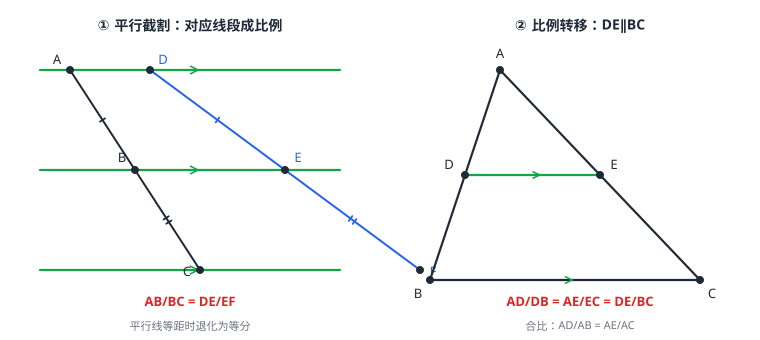

平行线分线段成比例
一组平行线截两条直线，截得的对应线段成比例：\tfracABBC=\tfracDEEF。特例是「等分」：平行线等距时截出的每段都相等。它的两个基本应用是平行截割计算线段长，以及三角形中 DE\parallel BC 时的比例转移 \tfracADDB=\tfracAEEC 与 \tfracADAB=\tfracDEBC。这是「形状不变、按比例缩放」全链条的第一环——比值先行，图形随后。
| 所属主题 | 相似与投影 |
|---|---|
| 所属模块 | 几何 |
| 课标学段 | 第四学段（7~9 年级） |
| 前置知识 | 相交线与平行线、分式 |
| 核心素养 | 运算能力推理能力几何直观 |
教材定位
人民教育出版社《人教版（2024版）义务教育教科书·数学》
九年级下册第31章 相似31.2 相似三角形
对应九下 31.2 之下的 31.2.1——2024 新教材把「平行线分线段成比例」放在相似章内。
说明
平行线分线段成比例定理：两条直线被一组平行线（三条及以上）所截，截得的对应线段成比例（图 1 左）。\tfracABBC=\tfracDEEF、\tfracABDE=\tfracBCEF 都是合法写法——前一个比值里的两条线段在同一条直线上，后一个在两条平行线之间，别混着写：分子分母必须同「型」。
等分特例：平行线间的距离相等时，\tfracABBC=\tfracDEEF=1，退化为「平行线等分线段」——纸窗横竖压条等分边框、作业本横线等分页边，都是它的日常形态。等分是成比例取比值为 1 的特例，定理反过来包含它。
三角形中的比例转移：\triangle ABC 中，D 在 AB 上、E 在 AC 上，只要 DE\parallel BC，就有 \tfracADDB=\tfracAEEC（转移方式一：小段比小段）与 \tfracADAB=\tfracAEAC=\tfracDEBC（转移方式二：部分比整体，图 1 右）。这一组比例式是后面大量「知三求一」的发动机。
比例式变形是代数活：分式的基本性质（分式）搬来即用——\tfracab=\tfraccd 可变形为 ad=bc（交叉相乘）、\tfraca+bb=\tfracc+dd（合比）、\tfracaa+b=\tfraccc+d。几何题算到一半卡住，多半是比例式没变到位。
使用场景
纱窗压条：矩形纱窗的左右边框被几条等距的横向压条分成六段——压条互相平行且等距，边框上的每一段自动相等，无需逐段测量。
格栅排孔：在一块梯形面板上钻一排等间距的通孔，孔心连线与两条腰平行——两腰被截出的线段成比例，安装图只需标注一组比，车间即可定位所有孔位。
注意点
「对应」二字是灵魂：比例式的两条线段必须处在平行线组的「同一对夹层」里（同位夹层）。把上层夹层的 AB 与下层夹层的 EF 写进同一个比值，比例式立刻失效。
\tfracADDB=\tfracAEEC 与 \tfracADAB=\tfracAEAC 不能互相串写：前者是「部分比部分」，后者是「部分比整体」。列式前先问自己分母写的是 DB 还是 AB。
比例式不是方程恒等式的堆砌：三条平行线才「够格」谈成比例，两条平行线截不出可用的比例结构（没有夹层可比）。
证明

图 1：左——平行线分线段成比例：三条平行线截两条直线，截得的对应线段成比例；右——三角形中的比例转移：DE∥BC 时，AD/DB=AE/EC=DE/BC，且 AD/AB=AE/AC
证明
结论 1等分特例：三条平行线把两条截线分成的对应线段成比例；间距相等时，同一条截线上的两段相等。
设平行线 l_1、l_2、l_3，l_1、l_2 间距离与 l_2、l_3 间距离相等。连接 A 与 E、过 B 作 AE 的平行线交 DE 于 G——平移把「平行线间距离相等」翻译成「BD=EG 且 GE=EF」，得 DE=EF；同法处理另一条直线得 AB=BC。
关键一步依据是「平行线间距离相等则被它们截出的线段相等」这条最基本的事实（可由平移或全等证明）：l_1、l_2 与 l_2、l_3 间距相等，过 B 作 AE 的平行线后，BD 与 EG 落在宽度相同的夹层里所以相等，GE 与 EF 同理，于是 DE=EF；换另一条截线用同样办法得 AB=BC。等分情形是后面成比例的特例。
结论 2一般结论：两条平行线分截线所得的对应线段成比例，\tfracDEEF=\tfracABBC。
距离不相等时，设 \tfracABBC=\tfracmn（m、n 为正整数；比值不是整数比时，把两条线段都按同一个足够小的长度为单位去量，份数的比仍然稳定在同一个值上，初中阶段只要求记住这个结论）。把 AB 等分成 m 份、BC 等分成 n 份，过每个分点作 l_1 的平行线——这组新平行线把两条直线截出的份数完全同步：一条上 m+n 份，另一条上也 m+n 份，对应夹层里的线段彼此相等，于是 \tfracDEEF=\tfracmn=\tfracABBC。
关键一步依据是把「成比例」细分成「等分」再数份数：把 AB 均分成 m 份、BC 均分成 n 份后，过各分点作平行线（份数取整数即可；比值不是整数比时，把两段都按同一个足够小的长度为单位去数份，份数比仍稳定不变），这组新平行线在两条截线上切出的段数同步（同为 m+n 段），落在同一夹层里的线段彼此相等，于是总长之比就等于份数之比 \tfracmn，即 \tfracDEEF=\tfracABBC。份数同步是能按层配对的前提。
结论 3在三角形中，平行于 BC 的线段 DE 把两边按同一比例分开：\tfracADDB=\tfracAEEC，等价地 \tfracADAB=AE/AC。
把 DE 与 BC 看成一组平行线，\triangle ABC 的两边 AB、AC 正是被这组平行线所截的两条直线，直接套定理得 \tfracADDB=\tfracAEEC；再用合比变形 \tfracADDB=\tfracADAB-AD 推出 \tfracADAB=\tfracAEAC。
关键一步依据是上面刚证的成比例定理直接套用：DE\parallel BC 时，AB、AC 就是被这两条平行线所截的两条直线，所以对应段之比相等。后一步是纯代数变形——把分母写成 AB-AD 与 AC-AE，两边同除以对应的整段，利用合比关系即得 \tfracADAB=AE/AC。
结论 4平行线段与整段也成比例：\tfracDEBC=\tfracADAB，即两者都等于「平行线到顶点的份数比」。
DE 与 BC 是两条平行线，被 AB、AC 所截——由第 1 步的等分思路倒推回去（把比例「细分成等分」），可以证明 \tfracDEBC=\tfracADAB：都等于「平行线到顶点的份数比」。初中教材把它与判定放在一起，此处作为定理体系的一环接受并使用。
关键一步依据与前面的等分思路同源，是逆用：把 AB、AC 都细分成同样的份数，DE 与 BC 分别落在从顶点 A 数起的第 k 份与第 N 份处，两个比都是「第几份占全部几份」，所以 \tfracDEBC=\tfrackN；同理 AD 与 AB 的份数比也是 \tfrackN，两个比相等。有了这一条，两条小段比之外才补上整段比。
动手实验
拿一张横格纸（横线等距平行），斜放一把直尺穿过若干横线：数一数直尺被相邻横线切出的段——每段长度都相等（等分特例）。换一把尺改变倾斜角度，段长整体变了，但任意两段的比与另一把尺上对应两段的比始终相同（成比例）。再在三角形图上用圆规量一量：DE\parallel BC 时，\tfracADDB 与 \tfracAEEC 的计算器读数精确到小数点后四位仍相等。
解题思路
平行截割「知三求一」：四条线段 AB、BC、DE、EF 知三求一，列比例式交叉相乘解方程（例 1）。
比例转移双通道：图形是「平行线截三角形两边」，要哪条线段就用哪套式子——求旁段用 \tfracADDB=\tfracAEEC，求平行段用 \tfracADAB=\tfracDEBC（例 2、例 3）。
变形三板斧：交叉相乘 ad=bc、合比 \tfraca+bb=\tfracc+dd、反比 \tfracba=\tfracdc。几何卡壳时先把已知比例式按需求的方向变一次形再代数。
按场景的例题
例 1（场景：图形设计） 格栅面板通孔定位
一块面板上钻一排通孔，孔心连线与面板两条边平行。两条边被相邻孔心连线截得：第一条边上 AB=3 厘米、BC=5 厘米，第二条边上 DE=4.5 厘米。求第二条边上的 EF。
解：孔心连线互相平行，由平行线分线段成比例：\tfracABBC=\tfracDEEF，代入 \tfrac35=\tfrac4.5EF，交叉相乘 3EF=22.5，EF=7.5 厘米。
答：EF=7.5 厘米。
例 2（场景：测量与工程） 桁架斜杆分点定位
桁架中 \triangle ABC 的两根杆 AB、AC 被一根与 BC 平行的斜杆 DE 穿过，D 在 AB 上、E 在 AC 上。已知 AD=2 米、DB=3 米、AE=3.6 米，求 EC，并问 EC 的长度用什么方式可以现场校核。
解：DE\parallel BC，用「部分比部分」：\tfracADDB=\tfracAEEC，即 \tfrac23=\tfrac3.6EC，2EC=10.8，EC=5.4 米。校核：\tfracAEEC 算出 3.6÷5.4=\tfrac23，与 \tfracADDB=\tfrac23 一致，比例自洽。也可实测 AC=AE+EC=9 米后验 \tfracAEAC=\tfrac3.69=\tfrac25=\tfracADAB=\tfrac25。
答：EC=5.4 米；用整体比 \tfracADAB=\tfracAEAC=\tfrac25 校核通过。
例 3（场景：生活优化） 百叶窗帘片下料
梯形窗洞上底装导轨 DE、下底装导轨 BC，DE\parallel BC，两侧斜边被 DE 分成上、下两段。测得 AD=2 米、AB=5 米、BC=12 米。求导轨 DE 的长度，并求两侧斜边上「上段」占全长的比例。
解：\tfracADAB=\tfracDEBC：\tfrac25=\tfracDE12，5DE=24，DE=4.8 米。上段占比 \tfracADAB=\tfrac25=0.4，即每侧斜边被分点切在 40% 处。校核：DB=5-2=3 米，\tfracADDB=\tfrac23，同法应有 \tfracAEEC=\tfrac23，一致。
答：DE=4.8 米；每侧斜边上段占全长的 \tfrac25（40%）。
常用推论
平行截割可以「跨夹层」连比：\tfracABBC=\tfracDEEF 与 \tfracABAC=\tfracDEDF 同时成立（合比推广），一条直线上的总长比与另一条上的总长比相同——排孔、排栅格的总量估算常用。
中点与 \tfrac12：若 D 是 AB 中点且 DE\parallel BC，则 \tfracADDB=1 强制 \tfracAEEC=1，E 必是 AC 中点，且 \tfracDEBC=\tfracADAB=\tfrac12——这正是三角形中位线（三角形的中位线）的来路：DE=\tfrac12 BC。
平行截割天然「双向」：知道比例可以反推平行（这是后续「判定」的种子）；知道平行可以算出所有比例（这是本篇的用法）。一正一反，把「位置关系」与「数量关系」焊在一起。
易错点
错三条平行线截两条直线，截得的线段都相等。
为什么错相等只在平行线等距（等分特例）时成立；一般情形是「对应线段成比例」，比值未必是 1。
正确截得的对应线段成比例；等距时才退化为相等。
错DE\parallel BC 时，\tfracADDB=\tfracAEAC。
为什么错分母混用了「部分」与「整体」：左边分母 DB 是部分，右边分母 AC 是整体，两式不成比例。
正确要么都取部分 \tfracADDB=\tfracAEEC，要么都取整体 \tfracADAB=\tfracAEAC。
错比例式里两条线段可以随意选取，只要都在图上。
为什么错必须选「对应线段」——同一对平行夹层里、两条被截直线上的同位置线段；随意组合的比例式在图上没有定理支撑。
正确先认准对应夹层，再在同位处各取一段写比值。
直观理解
把一组平行线想成琴弦间的横档，两条被截的直线像斜搭上去的两根琴枕：横档怎么排，两根琴枕被切出的节奏就完全一致——横档等距，切出的段等长；横档间距是 3:5，两根上对应段的比也都是 3:5。平行保证了「节奏同步」，比值由夹层间距唯一决定，与琴枕的倾斜角度无关。三角形里的 DE\parallel BC 则是琴枕交于顶点 A 的特例：切点节奏从顶点出发往下数，怎么数都同步（图 1 把两种结构并排对照）。